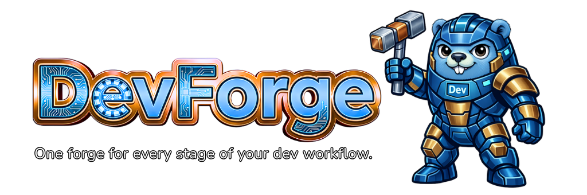

Problem solved
Agents waste tokens rewriting utility logic (hashing, JSON transforms, image conversion, PDF generation) and can hallucinate edge cases.

DevForge is a Go MCP server plus CLI/TUI that gives agents and developers deterministic tools for media, code, data, backend, frontend, security, files, and automation tasks.
Agents waste tokens rewriting utility logic (hashing, JSON transforms, image conversion, PDF generation) and can hallucinate edge cases.
90 stateless tools over stdio MCP and the same surface in CLI/TUI. Structured outputs, predictable behavior, no database dependencies.
Less prompt engineering, fewer ad-hoc scripts, faster task completion, and easier reproducibility in CI and local workflows.
Legacy markdown docs are preserved in dev-docs/.